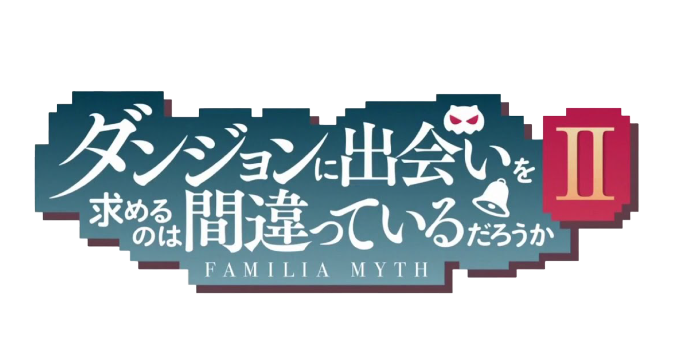

2 Temporada
Acompanhamos a jornada de Bell Cranel, um jovem de 14 anos a serviço da deusa Héstia e
único membro de sua Família. Ele se inspira na espadachim Ais Wallenstein, que um dia
salvou sua vida e por quem está apaixonado e parece não perceber que meio mundo acaba
tendo algum interesse nele, incluindo a própria Héstia.